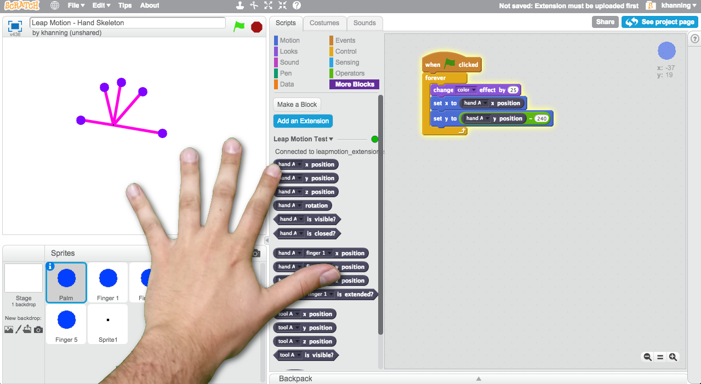
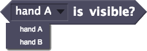
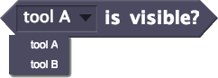
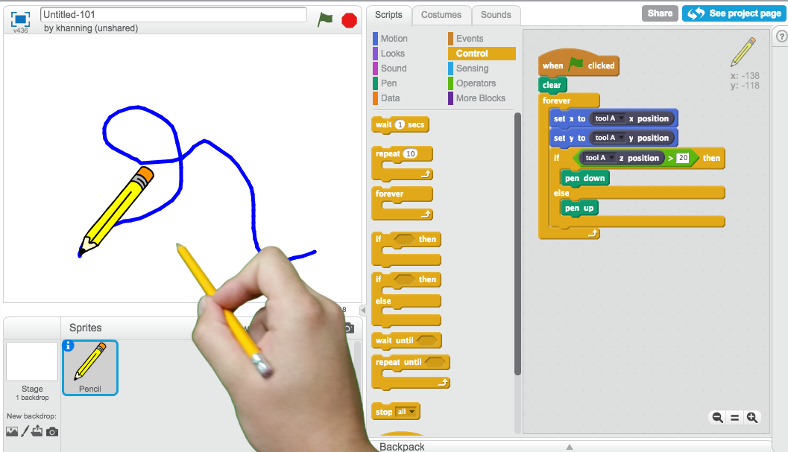
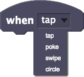

To use the extension, plug in your Leap Motion controller and open the Leap Motion extension on ScratchX.org.
This Scratch extension lets you incorporate hand tracking into your projects using the Leap Motion controller. For example, you can control a character on the screen by moving your hands around.
You will need access to a Leap Motion controller
The extension is capable of tracking up to two hands at a time. The hands are referred to as either 'hand A' or 'hand B'.
The first hand to become visible to the Leap Motion controller is referred to as 'hand A'. It doesn't matter if this is your right or left hand.
If a second hand becomes visible it will be referred to as 'hand B'.
The extension is capable of tracking up to ten fingers at a time. Fingers are always assigned to either 'hand A' or 'hand B'. See the Hands section above for details about the hand naming convention.
Each finger is numbered 1 - 5:The extension is capable of tracking up to two tools at a time. A tool is a long straight object like a pencil or a chopstick.
Tools are referred to the same way as hands. They are called either 'tool A' or 'tool B'.
The first tool to become visible to the Leap Motion controller is referred to as 'tool A'.
If a second tool becomes visible it will be referred to as 'tool B'.
The extension can also detect certain gestures you can make with your hand and fingers. Supported gestures are:
Tap - Downward tapping motion with a finger
Poke - Forward tapping motion with a finger
Swipe - Moving hand with fingers extended in a straight line across the screen
Circle - Making a circular movement with a finger
This is a brief description of each of the Scratch blocks included with the Leap Motion extension.
Returns the current X position of a hand.
Returns the current Y position of a hand.
Returns the current Z position of a hand.
Returns the current rotation of a hand.
Checks if a hand is visible.
Checks if a hand is closed.
Returns the current X position of a finger.
Returns the current Y position of a finger.
Returns the current Z position of a finger.
Checks if a finger is extended.
Returns the current X position of a tool.
Returns the current Y position of a tool.
Returns the current Z position of a tool.
Checks if a tool is visible.
Runs when a gesture is detected.
Waits until a gesture is detected.